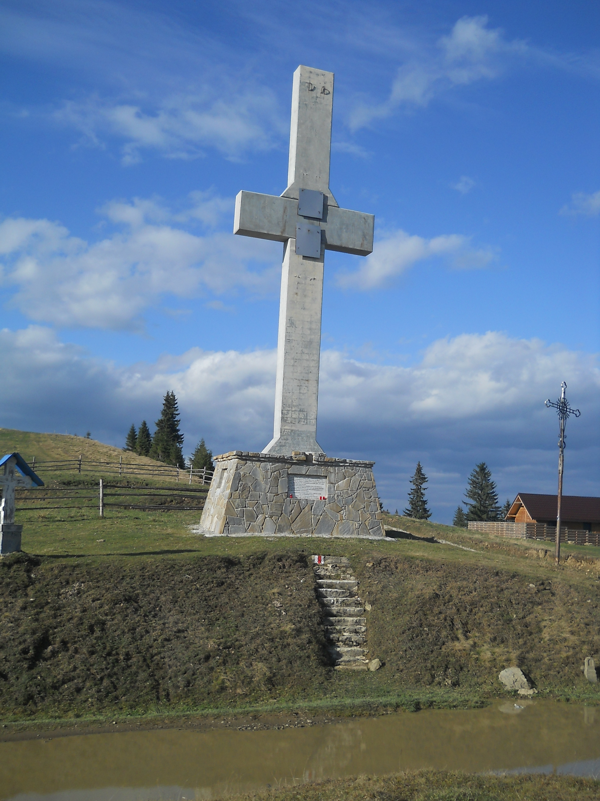
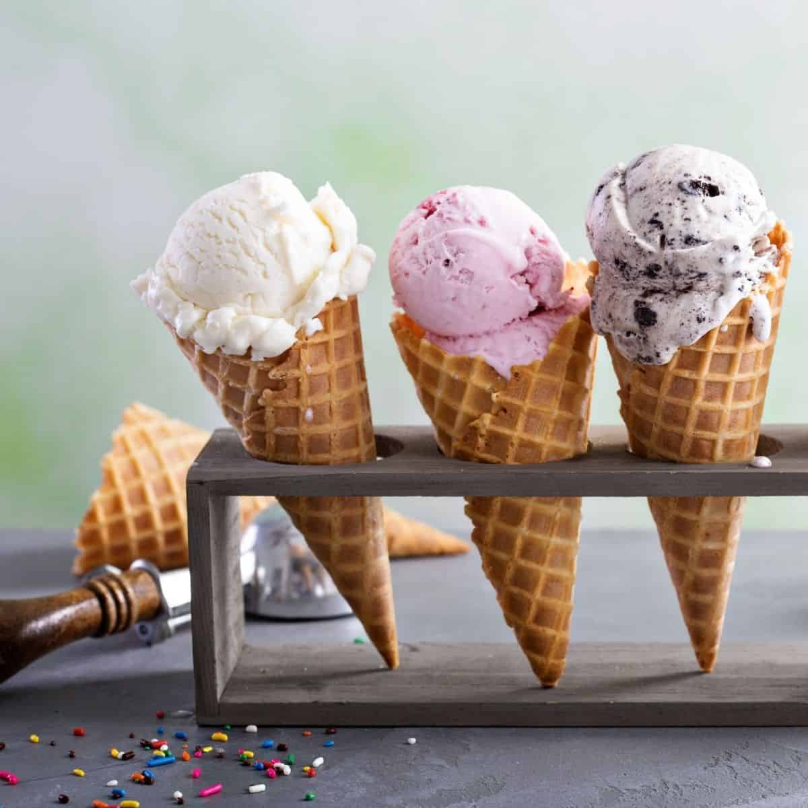

Discover Crucea Talienilor
Travel
Added by
Magda Ungureanu
.
April 01, 2023

Crucea talienilor in the Stanisoara Mountains is more of a historical landmark to be taken for granted as it is linked to King Carol I. Thus between 1902-1914 the king wanted to create a strategic link between the Moldavian Valley and the Bistrita Valley, and the Italians started to build a road for this purpose. Nowadays it is found on the route DJ 209 B from Malini, Obcina Stinisoarei, Borca, and thus the name of Talienilor Road appeared. Then after the completion of the works on this road, a stone cross was built at the highest point of the road, in the Stanisoara Pass, at 1235 m. Then this stone cross was replaced by a metal cross and a troita, which today have become an important tourist attraction in this area.
Best Ice Cream in Town
Food
aded by
Magda Ungureanu
.
March 05, 2023

Ice cream is a frozen dessert typically made from milk or cream that has been flavoured with a sweetener, either sugar or an alternative, and a spice, such as cocoa or vanilla, or with fruit, such as strawberries or peaches. Food colouring is sometimes added in addition to stabilizers. The mixture is cooled below the freezing point of water and stirred to incorporate air spaces and prevent detectable ice crystals from forming. It can also be made by whisking a flavoured cream base and liquid nitrogen together. The result is a smooth, semi-solid foam that is solid at very low temperatures. It becomes more malleable as its temperature increases.
Movie to See This Spring
Movies
Added by
Magda Ungureanu
.
March 01, 2023
Five Feet Apart is a 2019 American romantic drama film directed by Justin Baldoni (in his directorial debut) and written by Rachael Lippincott with Mikki Daughtry and Tobias Iaconis. The film was inspired by Claire Wineland, who suffered from cystic fibrosis. Haley Lu Richardson and Cole Sprouse play two young patients with cystic fibrosis who try to have a relationship despite being forced to stay six feet apart from each other. The film was released in the United States on March 15, 2019 by CBS Films via Lionsgate. It received mixed reviews from critics and grossed $92 million worldwide.
Python Course to Take This Year
Self developement
Added by
Magda Ungureanu
.
February 01, 2023
 Python is a computer programming language often used to build websites and software, automate tasks, and conduct data analysis. Python is a general-purpose language, meaning it can be used to create a variety of different programs and isn't specialized for any specific problem.
Python is a computer programming language often used to build websites and software, automate tasks, and conduct data analysis. Python is a general-purpose language, meaning it can be used to create a variety of different programs and isn't specialized for any specific problem.